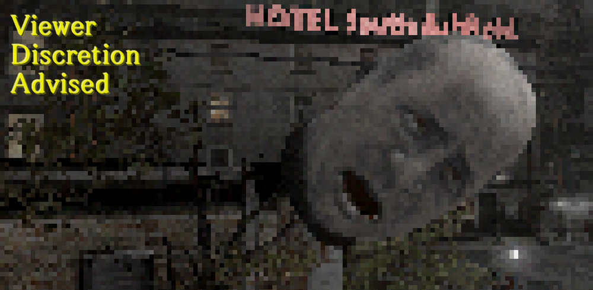
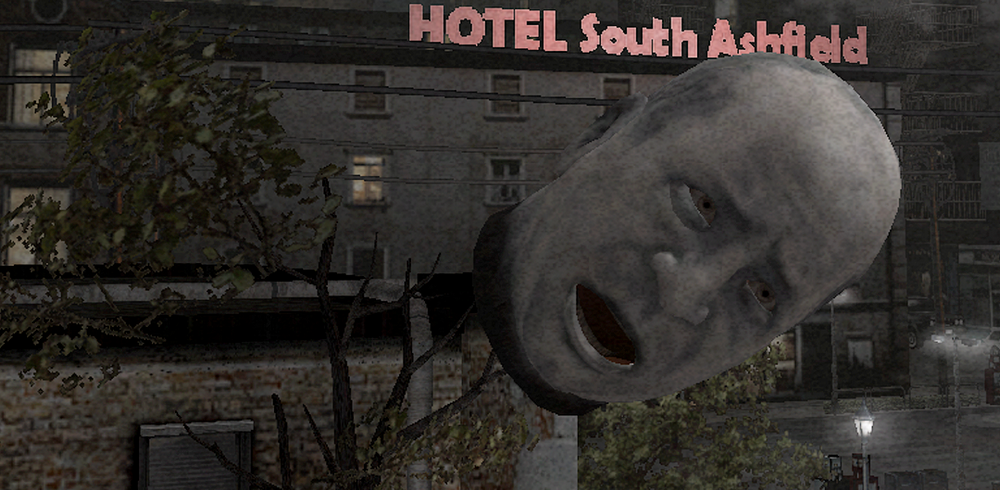
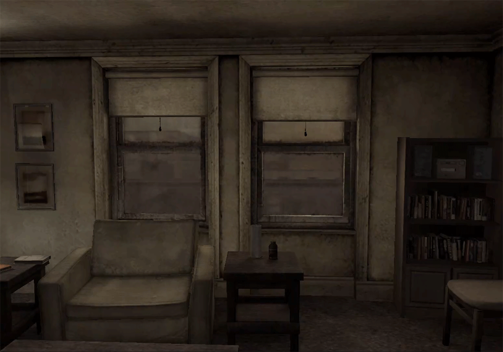
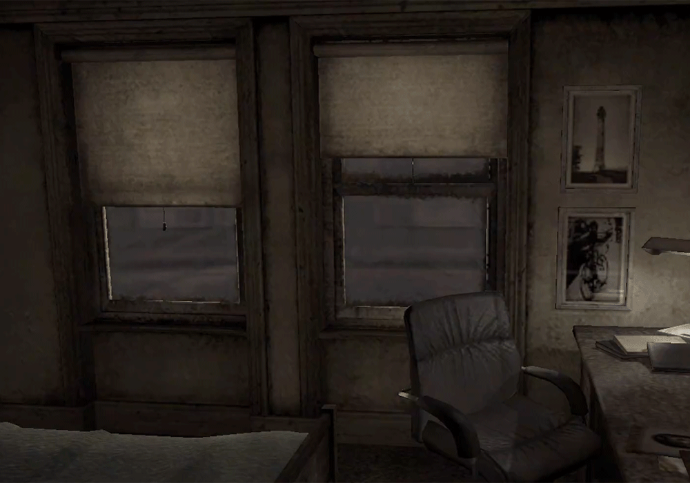
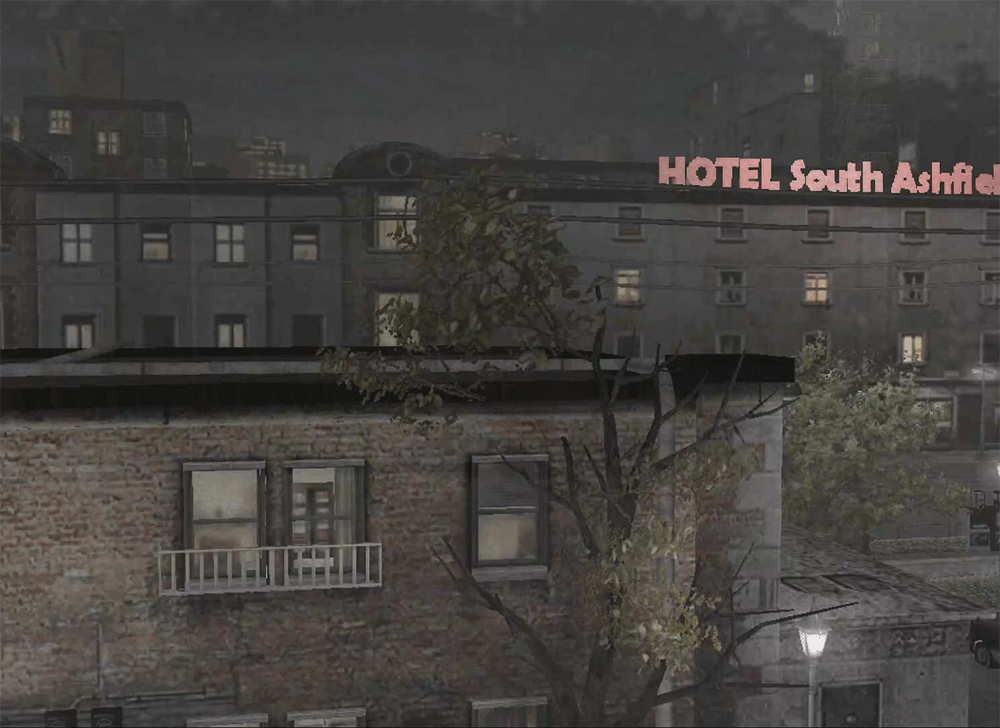

[SH4] How to Spot the Falling Severed Head Outside the Window
⚠️ Viewer Discretion Advised

Some Are Easy to Find, Others Are All About Timing
![[SH4] How to Spot the Falling Severed Head Outside the Window](img/da04.png)
This is a mirror of the DeviantArt version linked above, provided as a backup and for easier access.

In SH4 there are two events where Andrew's severed head falls outside the window, and both have fixed trigger conditions.
The head model looks a lot like Joseph's, so some people think it might be Joseph, but when you compare the textures, Joseph's head seems a bit slimmer. Also, since it only starts after the Water Prison World, and judging by the way the hair grows, I believe it's Andrew.

✅Small Head
During the first Building World, you can see it any number of times.


(From either the living room or the bedroom) if you look toward the window from inside the room, the head will fall from above. Sometimes it even goes upward from below. It floats slowly and softly, and since it can appear over and over again, it's very easy to catch.
✅Big Head
This happens only once, after the cutscene in the Hospital World where you bring Eileen back.
Specifically: after you meet up with her, hold hands and come back through the hole—from the moment you wake up until the next time you go into the hole. This is when the fan falls in the living room, and you also stop regenerating health.
(From either the living room or the bedroom) just looking toward the window isn't enough, you need to actually examine it. Even though you have to check multiple times, the head only falls once, and it moves very quickly!

On the GOG (or PC) version, there's a rare bug where the game crashes right after you see this. It happened to me a few times, so it's a good idea to save first.